Üç dünya, tek beyin
Robotun "beyni" dizüstü bilgisayarda çalışır. Aynı kod önce hızlı bir simülasyonda denenir, sonra 3D dijital ikizde, en sonunda gerçek robotta. Simülasyonda öğrenileni gerçeğe taşımaya sim-to-real diyoruz ve bu dersin kalbi bu.
Python ve Gymnasium
Bu sayfadaki arenanın aynısı. Saniyede binlerce adım atar, böylece robot bir ders saatinde binlerce kez deneyip öğrenebilir.
ROS 2 ve Gazebo
Gerçek fizik ve 3D görüntüyle aynı arena. Endüstride robotlar tam olarak böyle test ediliyor.
Pi 4 ve Pico robotlar
Fab lab'da kendi yaptığımız dört robot. İkisinin beyni Raspberry Pi 4, ikisininki Pico 2 W; hepsi aynı komutları anlıyor.
Simülasyon: son denemeler, üç yönden
Aynı eğitilmiş politika iki ayrı simülatörde robotu sürüyor: hızlı Python dünyası ve ROS 2 ile Gazebo ikizi. Gazebo denemesini aynı anda üstten, önden ve yandan kaydettik. Tüm videolar pencere açılmadan alındı ve yaklaşık 6 saniye sürüyor.
Gazebo: son deneme (üst, ön, yan)
Sitedeki "Öğrenmiş" politika (ppo-500k-f3) ROS 2 konularıyla (/tof_*/range, /cmd_vel) robotu sürüyor. Üç video aynı denemenin kayıtları; içeriğine bakılarak seçilmedi. Gazebo'da hareketli engeller henüz sekerek giden toplar; Pico robot benzeri engeller yalnızca Python simülatöründe var.
Python simülatörü


Tüm simülasyon, üç yönden (robot doğma noktasında)


Robot yakın çekim: simülasyondaki hâli

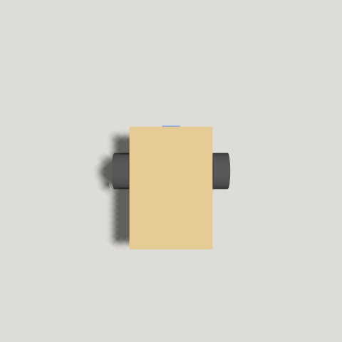

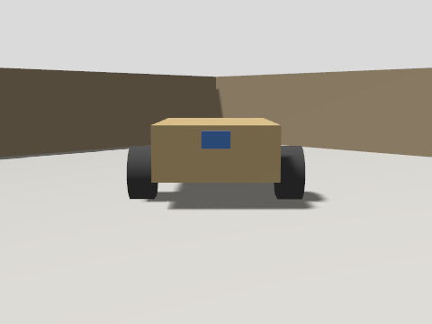

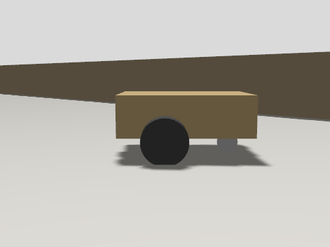

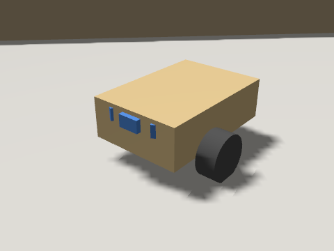
Simülasyondaki robot tek bir gövde kutusu ve iki tekerlekten oluşur; gerçek robotun yerleşimi için aşağıdaki Teknik çizimler bölümüne bak. Görüntüler tools/capture_gazebo/run.sh ve pai_gym/record.py ile üretilir.
Mimari: beyin nasıl çalışıyor?
Robotun beyni, her adımda üç şeyi tekrarlayan küçük bir döngü: sensörleri oku, bir eylem seç, tekerlekleri sür. Aynı döngü üç dünyada da çalışır; yalnızca sensörlerin ve tekerleklerin ardındaki "dünya" değişir.
Veri nereden nereye gidiyor?
- Eğit
train.pyPPO ile sinir ağını eğitir, modelimodels/altına kaydeder. - Ölç
evaluate.pyher modeli ve kuralları aynı 100 bölümde sınar; sonuçexperiments.json'a yazılır. - Aktar
--exportile ağın ağırlıklarıpolicy_latest.json'a çevrilir. Tarayıcı ağı kendi içinde çalıştırır. - Yaz
log_finding.pybulguları,export_site_config.pysensör düzenlerini (robot.json) üretir. - Yayınla
publish.shyalnızcadocs/klasörünü GitHub Pages'e gönderir. Sayfa bu JSON dosyalarını okuyup kendini çizer.
Sayfanın kodu değişmeden yalnızca veri güncellendiği için her yeni deney sitede kendiliğinden görünür.
Simülatörün sözleşmesi
- Gözlem
- Her sensörün mesafesi, 1,5 m'ye bölünüp 0-1 arasına sıkıştırılır. Hafıza açıksa (
frames) son birkaç adımın okuması arka arkaya eklenir. 3 sensör ve 3 kare, 9 sayı eder. - Eylem
- 5 ayrık hareket: ileri (0,20 m/s), sol-ileri ve sağ-ileri (0,12 m/s ve ±1,5 rad/s), yerinde sola ve sağa dön (±2,5 rad/s).
- Ödül
- İleri gittikçe artı. Yerinde dönmek küçük ceza. Engele 10 cm'den fazla yaklaşmak ceza, çarpmak büyük ceza (−10) ve bölüm biter.
- Sensör
- 27° görüş konisi, 0,04-4 m, her konide 5 ışın ve 1 cm gürültü. İki düzen var:
front3veside5(iki yan sensör daha). - Zaman
- Adım 0,05 sn, bir bölüm en çok 1000 adım (50 sn). Arenada 2 sabit, 2 hareketli engel var.
- Eğitim
- Stable-Baselines3 PPO, 8 paralel ortam, işlemcide. Ağ küçük bir çok katmanlı algılayıcı (MLP).
Gerçek robota giden ortak dil
Robotun üç dünyada aynı kodla çalışması için hepsi aynı ROS 2 konularını konuşur (SI birimleriyle):
/cmd_vel Twist beyin -> robot
/tof_left/range Range robot -> beyin
/tof_center/range Range robot -> beyin
/tof_right/range Range robot -> beyin
/imu /odom Imu, OdometryGazebo ikizi bu konuları ROS 2 Jazzy ile yayınlar. Gerçek robotlarda Raspberry Pi 4 doğrudan ROS 2 çalıştırır, Pico 2 W ise MicroPython ve Wi-Fi (UDP) ile konuşur.
İki tür gerçek robot
Gerçek arenada iki ayrı rolde robot olacak. İkisi de aynı ROS 2 konularını konuşur, fark beynin nerede çalıştığında ve robotun ne yaptığında.
Küçük robotlar: rastgele hareket
- Kart
- Raspberry Pi Pico 2 W (MicroPython, Wi-Fi)
- Görev
- Rastgele dolaşmak. Öğrenmezler; arenada hareketli engel gibi davranırlar.
- Simülasyondaki karşılığı
- Hareketli engeller
- Beyin
- Yok. Komutu laptoptan ya da ana sunucudan UDP ile alır, sensör verisini geri yollar.
Büyük robotlar: görev çözen
- Kart
- Raspberry Pi 4 (ROS 2 Jazzy)
- Görev
- Öğrencilerin verdiği görevi çözmek: engellerden kaçmak, hedefe gitmek.
- Simülasyondaki karşılığı
- Eğitilen PPO robotu
- Beyin
- Eğitilmiş politika robotun üzerinde, Pi 4'te çalışır. Eğitimi ve robotları laptop ya da ana sunucu yönetir ve izler.
Ana bilgisayar (laptop ya da ana sunucu) üç iş yapar: PPO eğitimini çalıştırır, yeni politikayı Pi 4'lere gönderir, tüm robotları izleyip kontrol eder. Geliştirme sırasında kolay olduğu için politika geçici olarak laptopta da çalıştırılabilir.
Bu bir plan; iki tür robot da henüz kurulmadı. Küçük robotların gerçek hareketli engellerin yerini alması, sim-gerçek farkını ölçmemizi sağlayacak.
Katman katman olgunluk (1-5)
1: yalnızca fikir ya da plan. 3: kodlanmış ve simülasyonda ya da sahte robotla test edilmiş. 4: gerçek bir yazılım ortamında (ROS 2 / Gazebo) uçtan uca denenmiş. 5: gerçek donanımda doğrulanmış. Hiçbir şeyi gerçek robotta denemedik, bu yüzden hiçbir katman 4'ün üstüne çıkmadı ve gerçek dünya katmanları hâlâ 1-3. Plan ile uygulama ayrı satırlarda: plan 3, uygulama 1.
| Katman | Sürüm 1 | Şimdi (7 Ekim) | Ne var, ne eksik |
|---|---|---|---|
| Gymnasium simülatörü | 4 | 4 | 2B dünya, iki sensör düzeni, senaryo dosyaları (pico2: gerçek boyutlu Pico engeller), gerçeğe benzetme bozuklukları, 18 birim testi. |
| Eğitim ve ölçüm hattı | 4 | 4 | 12 deney aynı 100 bölümde ölçüldü; bozukluklarla eğitim denendi. |
| Site ve yayın hattı | 4 | 4 | Sayfa yalnızca veriyle çalışıyor, yayın otomatik. Yapım rehberi de aynı yöntemle (build.json) çalışıyor. |
| Gazebo dijital ikizi | 3 | 4 | Başsız Gazebo'da denendi: düz gitme %1-2, dönme %1-3 içinde uyuşuyor; ToF Python'dan tutarlı biçimde 1,6-2,2 cm kısa okuyor (nedeni incelenmedi). |
| Ortak Python arayüzü | 1 | 4 | SimRobot, UdpRobot (sahte Pico) ve RosRobot (başsız Gazebo, tests/ros_integration.py) test edildi. Gerçek robotta denenmedi. |
| Ana bilgisayar kontrolü | 1 | 3 | host/fleet.py: durum, rastgele mod, durdurma sahte Pico ile denendi. scp ve ssh adımları denenmedi. |
| Küçük robot (Pico 2 W) | 1 | 2 | firmware/pico2w/: rastgele ve uzaktan mod yazıldı, protokol sahte Pico ile test edildi. ToF kodu gerçek kütüphaneye (vl53l1x_pico) göre yazıldı, sahte modüllerle test edildi. Gerçek kartta ve sensörle denenmedi. |
| Büyük robot (Pi 4) | 1 | 3 | Sürücü düğümü ROS 2'de sahte donanımla, tof.py sahte sensörlerle, run_policy.py Gazebo'da denendi. Gerçek Pi'de denenmedi, pinler boş. |
| Fiziksel yapım planı | – | 3 | Parçalar, adımlar, açık kararlar ve arena etiketleri yazıldı (Yapım rehberi). Hiçbiri gerçek donanımda doğrulanmadı. |
| Fiziksel yapım ilerlemesi | – | 1 | Fiziksel adımlardan hiçbiri henüz yapılmadı. |
| Sanal tasarım (3B, çizim, lazer, BOM, kablolama) | – | 3 | Tek kaynaktan (design/design.py) üretilir; çakışma, delik payı ve ölçü tutarlılığı testle denenir. Yıldızlı parça ölçüleri varsayım, gerçek parçalarla doğrulanmadı. |
| PCB şeması (Pico taşıyıcı kartı) | – | 2 | Parça ve net verisi, netlist ve şema üretildi; elektrik kontrolleri ve firmware pin eşleşmesi testli. KiCad'de açılmadı, yerleşim ve yönlendirme yok. |
| Kalibrasyon hattı | – | 3 | tools/calibrate.py: ölçüm CSV'lerinden simülasyon ve firmware ayarları. Bilinen değerli sentetik ölçümle test edildi; gerçek ölçüm henüz yok. |
| Sim-gerçek aktarımı | 1 | 2 | Benzetme araçları, referans değerler ve kalibrasyon hattı hazır. Hiçbir model gerçek robotta denenmedi. |
| Sensör düzeni uyumu | 2 | 2 | side5 yalnızca simülasyonda. Pico pin planında yalnızca üç ToF için yer var. |
Puanlar bu projenin kendi değerlendirmesi; ölçüm değil, yorum.
Şu anki durum
- Python / Gymnasium simülatörü ve PPO eğitimi
- Gazebo arenası, robot modeli ve hareketli engeller
- Deney, bulgu ve sensör düzeni kayıtları ve bu sayfaya otomatik yayın
- Üç dünya için ortak Python arayüzü (SimRobot, RosRobot, UdpRobot), Gazebo'ya karşı test edildi
- Senaryo dosyaları, gerçek Pico benzeri engeller ve gerçeğe benzetme bozuklukları
- Fiziksel yapım: arena, iki tür robot ve ağ (Yapım rehberi)
- Büyük robotlar için Pi 4 sürücüsü, küçük rastgele robotlar için Pico 2 W yazılımı (MicroPython, UDP)
- Pico robot kartı (fab lab'da frezelenecek) ve senaryo sistemi
Henüz hiçbir model gerçek robotta denenmedi; bu sayfadaki tüm sonuçlar simülasyondan geliyor. Beş sensörlü düzen şimdilik yalnızca simülasyonda var: Pico'nun mevcut pin planında yalnızca üç ToF sensörü için kapı var.
Deneyler
Eğittiğimiz her modeli aynı 100 test bölümünde ölçüyoruz: önce sadece sabit engellerle, sonra hareketli engellerle. Bir bölüm, robot çarparsa ya da 50 saniye dolarsa biter. Yeni bir deney yapıldığında bu bölüm kendiliğinden güncellenir.
Deney sonuçları yükleniyor.
Bulgular
Deneylerden çıkan sonuçlar, kararlar ve donanım notları. Robotu neden bu şekilde tasarladığımızın günlüğü.
Bulgular yükleniyor.
Robotu tanı
Simülasyondaki robotla gerçek robot aynı ölçülere sahip. Bir milimetrelik fark bile, simülasyonda öğrenilen davranışın gerçekte bozulmasına yol açabilir.
- Tekerlek
- 43 mm çap, iki tekerlek arası 115 mm
- Sürüş
- Diferansiyel: iki motor, arkada bilyeli sarhoş teker
- Motor
- N20 enkoderli, 6 V, ~300 devir/dakika
- Mesafe
- 3 x VL53L1X lazer sensör: 27° görüş, 4 cm – 4 m
- Denge
- MPU6050 ivme ve dönüş sensörü
- Beyin
- İki tür: büyük robot Raspberry Pi 4 (politika üzerinde çalışır), küçük robot Pico 2 W (rastgele dolaşır, Wi-Fi ile laptopa bağlı)
Teknik çizimler
Yapılacak her şeyin ölçülü çizimi: iki robot, arena ve sistem şeması. Ölçüler simülasyonla aynı kaynaklardan (world.py, pai_bot.urdf, arena.sdf) üretilir, böylece çizim ile simülasyon ayrışmaz. Büyütmek için çizime tıkla.

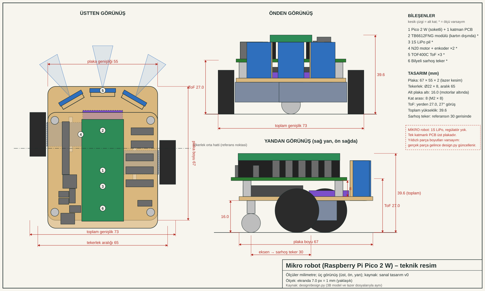

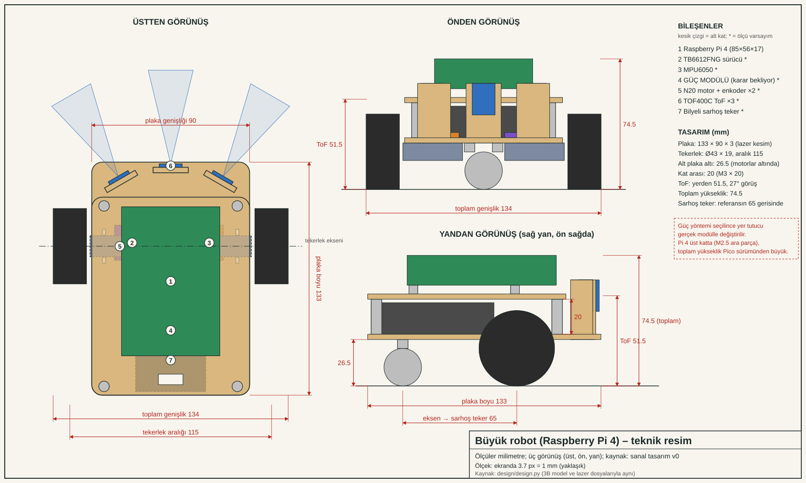

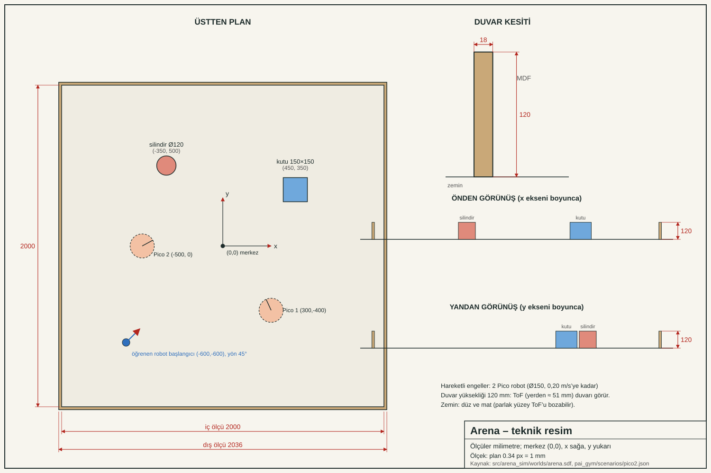

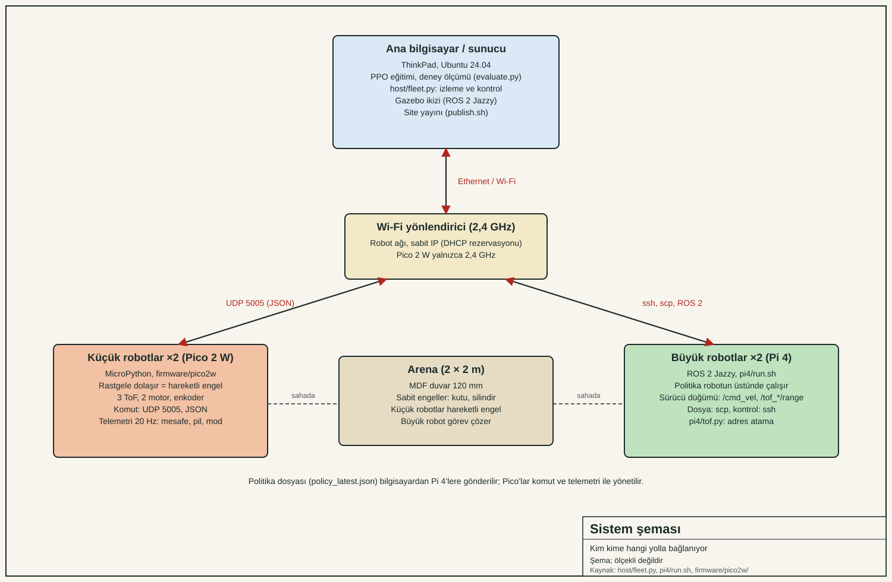
Çizimler tools/drawings/make_drawings.py ile üretilir. Üretim yöntemi önerisi: 3 mm lazer kesim (karar listesine bak). Plakalar simülasyondaki 133 × 90 mm gövdeyle aynı ayak izine sahip.
Sanal prototip: tüm tasarım hazır
Robotun tamamı tek kaynakta (design/design.py) tanımlı. 3B model, teknik resimler, lazer kesim dosyaları, parça listesi ve kablolama bundan üretilir; parçalar çakışıyor mu, delikler kenara çok yakın mı gibi kontroller testle her seferinde sınanır. Fiziksel aşamada tasarım yeniden çizilmez: yalnızca kesilir, monte edilir, gerçek parçalar ölçülüp yıldızlı varsayımlar düzeltilir ve kalibrasyon verisi girilir.
3B model (OpenSCAD): küçük robot (Pico 2 W)

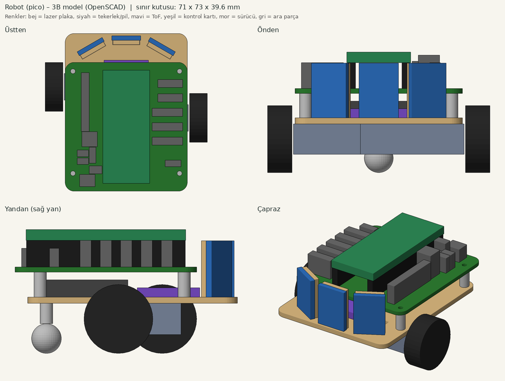

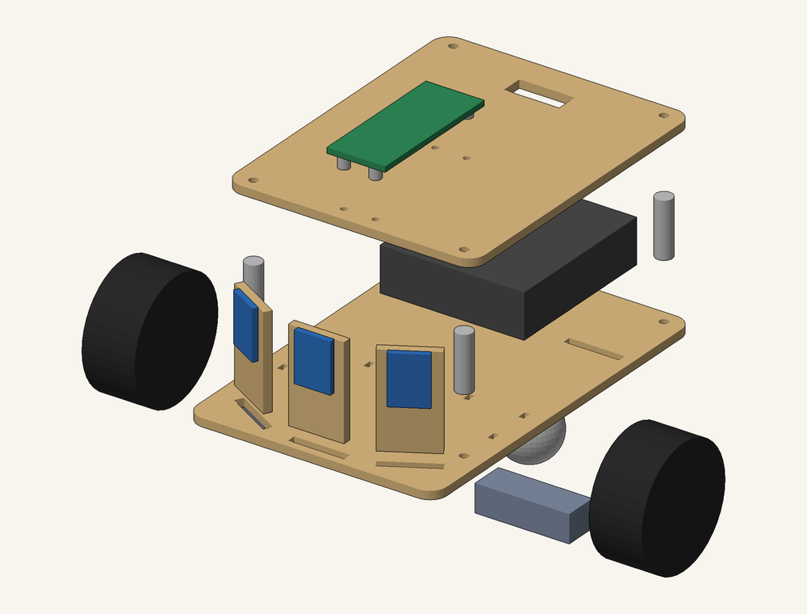
3B model: büyük robot (Pi 4)

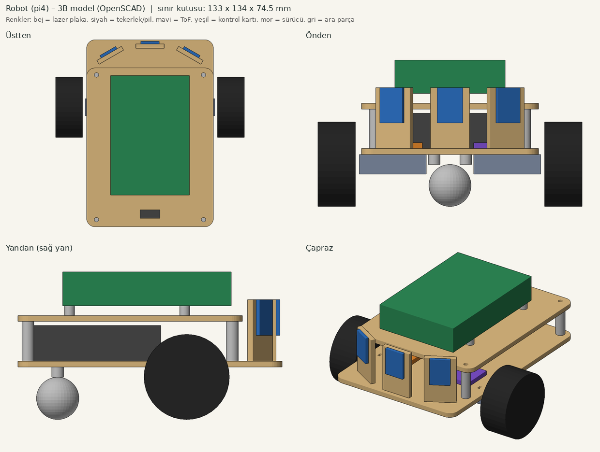

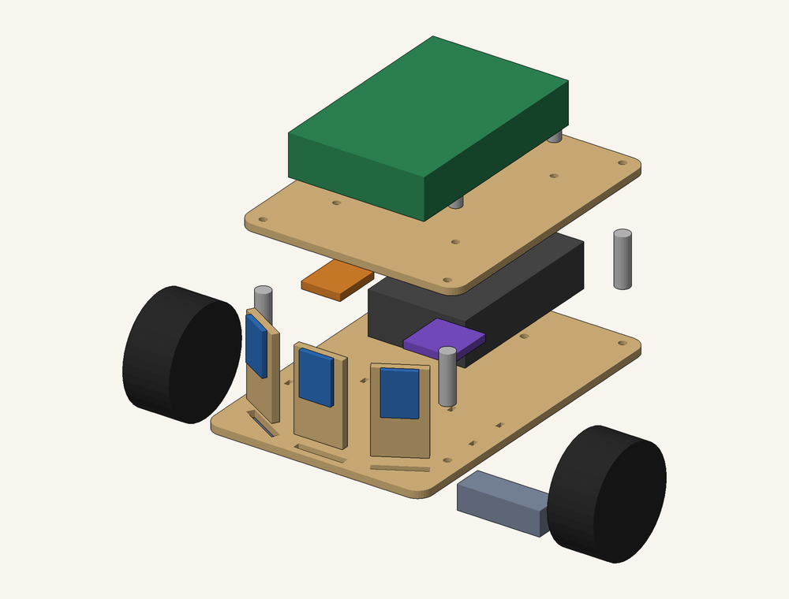
İndirilebilir üretim dosyaları
- Lazer kesim (1 birim = 1 mm; kırmızı kes, mavi yerleşim çizgisi): laser-pico.svg, laser-pi4.svg
- DXF: alt plaka (Pico), üst plaka (Pico), alt plaka (Pi 4), üst plaka (Pi 4)
- 3B model (STL): robot-pico.stl, robot-pi4.stl


İlk kesim için karton ya da ince MDF öneriyoruz: yıldızlı parça ölçüleri henüz varsayım. Parça gelince ölç, design/design.py içinde değiştir, python3 tools/design/build_all.py ile her şeyi yeniden üret.
Parça listesi
Kablolama
PCB şeması: Pico taşıyıcı kartı (v0)
Pico 2 W, TB6612 sürücü modülü, 3 ToF, MPU6050, iki motor ve enkoder, pil girişi ve 5 V regülatör tek kartta, 2,54 mm soketlerle birleşir (lehim az, parça değişimi kolay). Şema parça ve net verisinden üretilir; elektrik kontrolleri (tek pinli net, çifte bağlı pin, bağlanmamış pin, ADC gerilimi, bölücü oranı) ve Pico pinlerinin firmware ile aynı olup olmadığı testle denenir.

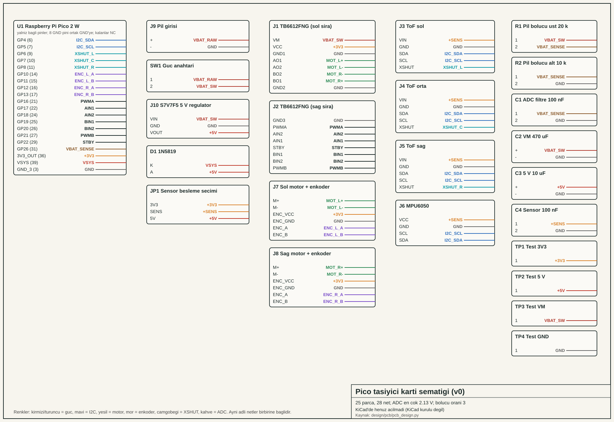
- pico-carrier.net (KiCad netlist, PCB düzenleyicide içe aktarılır), netlist.csv, bom.csv
- Bu şema KiCad'de henüz açılmadı: bilgisayarda KiCad kurulu değil (kurulum yönetici parolası ister). Modül pin sıraları (TB6612, motor, regülatör) gerçek modüllerle doğrulanacak.
- Bilinen eksikler: ters pil bağlantısına karşı koruma yok; yerleşim ve yönlendirme yapılmadı; ToF modülünün besleme aralığı bilinmediği için JP1 ile 3,3 V ya da 5 V seçilir; enkoder beslemesi yalnızca 3,3 V (5 V gerekiyorsa seviye çevirici lazım).
Kalibrasyon hattı: fiziksel aşama yalnızca veri girişi
Gerçek robotta yapılan ölçümler design/measurements/*.csv dosyalarına yazılır; python3 tools/calibrate.py --firmware motor farkını, gecikmeyi, sensör sapma ve gürültüsünü, robot yarıçapını ve Pico hızını hesaplayıp simülasyona (calibration=True) ve Pico firmware'ine (calibration.py) verir. Hat, bilinen değerlerle üretilmiş sentetik ölçümle test edildi.
Bugün: Pico robot tezgâh denemesi
Yükleniyor.
Başlamadan önce
Güvenlik
Başarı ölçütü
Kaydedilecekler
Bugünün adımları
Beş grup, beş iş paketi
Hareketli cisimleri yapan, Pi 4'leri kuran, dünyayı oluşturan, sunucu ve bilgisayar sistemini yöneten ve toplam yapay zekâ denemelerini yapan beş grup. Her grubun görevi, çıktısı ve diğer gruplarla alışverişi aşağıda.
Yapım rehberi: fiziksel işler
Yapım listesi yükleniyor.
Önce kapatılacak kararlar
Dönem planı
Her aşama bir öncekinin üzerine kuruluyor. Simülasyonda başlıyor, gerçek robotla bitiyor.
Algı: robot dünyayı nasıl görür?
Sensörler, mesafe ölçümü ve gürültü. Kör modda sürme yarışması.
Kurallar: robotu biz programlarız
"Eğer-ise" kurallarıyla engelden kaçan robot. Kuralların nerede yetmediğini keşfetme.
Öğrenme: robot deneyerek öğrenir
Pekiştirmeli öğrenme, ödül tasarımı ve eğitim. Robota iyi ile kötüyü nasıl anlatırız?
Sim-to-real: gerçek dünyaya geçiş
Robotları fab lab'da yapma, simülasyonda öğrenilen davranışı gerçek robotta deneme ve farkları inceleme.
Senaryolar: kendi dünyanı tasarla
Hareketli engeller, görevler ve takım projeleri. Her takım arenaya kendi senaryosunu getirir.
Plan dönem boyunca sınıfın ilerleyişine göre güncellenecek.
Kendi bilgisayarında çalıştır
Bu sayfadaki simülatörün Python sürümü, robotu eğitmek için kullandığımız asıl araç. Python 3.10 veya üstü yeterli; Windows, Mac ve Linux'ta çalışır.
git clone https://github.com/yalcins/physical-ai.git
cd physical-ai
python3 -m venv .venv
source .venv/bin/activate # Windows: .venv\Scripts\activate
pip install torch --index-url https://download.pytorch.org/whl/cpu
pip install -r pai_gym/requirements.txt
cd pai_gym
python play.py --mode manual # robotu sen sür
python train.py # robotu eğit
python play.py --mode model # eğitilmiş robotu izle